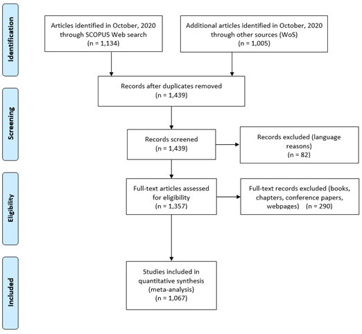
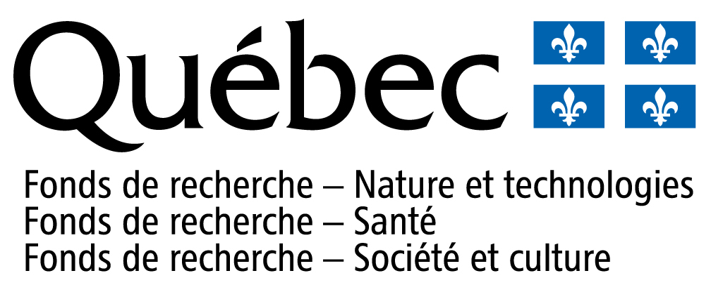

PRISMA 2009 flow diagram (following Moher et al., 2009).
Key objective |
Guiding questions |
|---|---|
|
FOCUS |
Primary focus of PES research: what are the research objectives and thematic focus areas; where and by whom is the research conducted? |
PROCESS | How are PES projects being defined and (empirically) analyzed (e.g. research methods and approach)? |
OUTCOMES | Main research outcomes, recommendations or concerns from PES studies: How do these relate to subsequent research objectives; how do they change over time and across regions? |
Variable |
Description |
|---|---|
Author | Name of the author(s) of the article |
Title | Title of the article |
DOI | Official Digital Object Identifier (DOI) of the article |
Year | Year of publication of the article |
Journal | Name of journal in which the article is published |
Volume | Volume of journal in which the article is published |
Institution name | Name of main institution to which the first author of the article is affiliated |
Institution type | Type of main institution to which the first author of the article is affiliated |
Institution country | Country in which the first author’s main institution is based. For simplicity and assuming greater responsibility of the research effort in the contributions of the first author, we use first author as a proxy for institutional basis. |
Direct-indirect | Direct studies focus on PES, either theoretically or empirically; Indirect studies do not directly theoretically or empirically engage with PES to any extent; they merely propose PES as a potential policy solution to address ecological challenges. |
Thematic focus | Main thematic focus or objectives addressed in the article |
Methods | Primary method(s) used i the study |
Methodological approach | Overarching main methodological approach applied in the study ranging from quantitative analyses (including randomized control trials, geospatial analyses, framed-field experiments, and contingent valuation or choice experiments), qualitative analyses (e.g. discourse analysis of interviews), to conceptual and institutional analyses (e.g. prescriptive, legal, or policy-oriented), and mixed methods (e.g. social multi-criteria evaluation) |
Contextual engagement | The type of engagement with social, cultural and political contexts and dynamics in the PES study. Studies informed by the setting engage with the social/cultural/political context and/or the qualitative, lived or emotional experiences of a particular setting or context (e.g. local meanings of ‘nature’, and/or power asymmetries of diverging positionalities of actors); Externally-driven studies are based upon broad policy analyses and/or largely employ external expert-developed models or strategies to interpret data or implement programmes and policies with an idealized design (e.g. a choice experiment to uncover values for stylized development scenarios); Combined studies use both strategies by introducing an external model, while at the same time ensuring that such a model is informed and dependent on the social, political, or cultural context of where the model is applied (e.g. a social multi-criteria model) |
Recommendation | Main conclusion, recommendation or concern of the study related to PES scholarship and/or specific programmes. This could include points of attention for future research, recommendations regarding PES application and/or the applicability of PES more broadly. |
Author evaluation | Authors’ overall evaluation of PES as a (potentially) successful strategy to achieve its stated objectives. Mixed evaluations refer to PES as offering potential but with some reservations/concerns to be addressed |
Country focus | Country on which the study is focused |
For a more detailed explanation of the methodology, and a detailed description of all coded variables, please see here and here
Research collective:
